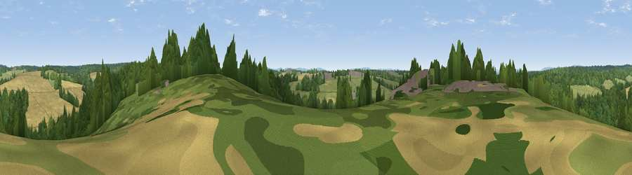

Viewpoint near Lower Beeding
#39189 in England · top 77% of its area beats it · near Lower BeedingWhere it is
The exact computed spot (TQ 22925 28875). Click the marker for map links.
The view, rendered

A 360° render of this exact spot computed from the terrain model, tree cover and land cover — summer colours, afternoon light, calibrated against photographs of famous viewpoints. Real trees, hedges and buildings will differ in detail.
The panorama
Grey silhouette: terrain skyline in each direction (720 bearings, Earth curvature and refraction included). Dashed green: skyline with trees (+15 m) and buildings (+8 m) as obstacles. Blue strip: how far the ground is visible on each bearing.
Where the view opens
Wedge length = distance to the farthest visible ground on that bearing (vegetation-aware). Rings at 10, 25 and 50 km.
What fills the view
44% woodland · 32% grassland · 22% cropland · 2% built-up
Angular shares of the visible panorama (visual magnitude), not map area. Landscape diversity 0.50 (0–1 Shannon).
Key numbers
More beautiful places nearby
The staircase of upgrades: each row has a higher view potential than everything closer. Driving times are estimates from straight-line distance, calibrated against real road routing — check an actual route before setting out.
| Place | Direction | Drive | Score |
|---|---|---|---|
| Viewpoint near Crabtree | S · 3 km | ~7 min | 34.1 |
| Viewpoint near Warninglid | SSE · 3 km | ~8 min | 42.4 |
| Hampshire Hill | WSW · 4 km | ~10 min | 49.1 |
| Viewpoint near Balcombe | E · 7 km | ~14 min | 49.7 |
| Viewpoint near Kingsfold | NW · 8 km | ~17 min | 55.0 |
| Viewpoint near Capel | NNW · 15 km | ~26 min | 55.6 |
| Wolstonbury Hill | SSE · 16 km | ~28 min | 79.6 |
| Edburton Hill | S · 18 km | ~31 min | 82.3 |
51.04608, -0.24781 · source: screening · position refined by local search. Computed location — check access rights before visiting.